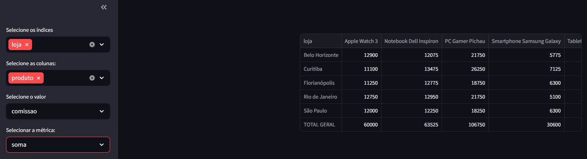
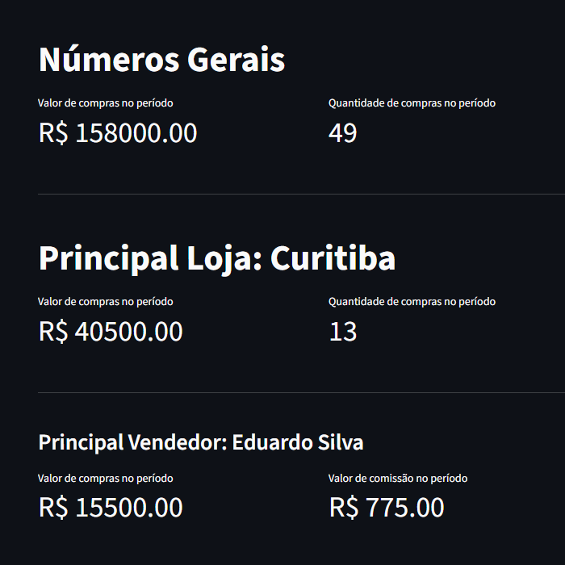

Dashboard de compras
Dados · 2026
Sozinho, do dataset ao painel
Estudo

O problema
Faturamento por loja, vendedor e produto — sem ferramenta de BI paga nem planilha atualizada à mão.
O que construí
Painel em Streamlit sobre três bases cruzadas em Pandas: compras, produtos e lojas.
Filtro que refaz a conta. Cada filtro recalcula os agregados, não recorta tabela pronta.
Base gerada por script. O dataset sai do próprio repositório, então o painel roda em qualquer máquina.
Stack
Python
Pandas
Streamlit
Resultado
Faturamento por loja, vendedor e produto numa tela
